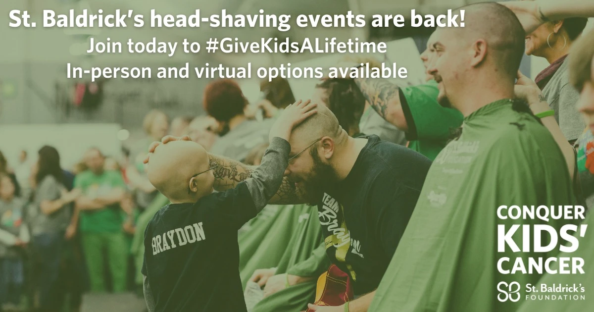

Upcoming Dates
- Add to Calendar
- 12 Jun 22 || Kells, Co. Meath || View on map
- The Headfort Arms || Tickets
- Add to Calender
- 10 Jul 22 || Galway City, Co. Galway || View on map
- The Kings Head || Tickets
- Add to Calender
- 20 Aug 22 || Killarney, Co. Kerry || View on map
- I.N.E.C || Tickets
News

Cumasc Gael are currently recording their first studio album.
To be released in September 2022, 'The Cutty Sark Mutiny' is a true representation of the group's unique, 'Celtic-Bluegrass' sound and features 11 foot-stomping anthems, including the singles: 'Gagged and Bound', 'G.I.G (God is Good) and 'I Said Nothing'.
Check out the Media page for an exclusive sneak preview!
Cumasc Gael helped raise over $1000 for the St Baldrick's Foundation last month during our recent shows in RIRA Charlotte. 
The foundation who raise funds for young people fighting cancer, were promoting the annual head shave drive which encourages people to participate in sponsored head shave events throughout the United States.
Click the link below for more information on the charity's incredible work and please make a donation if you can.
Make a Donation!!
Cumasc Gael are delighted to confirm they will be appearing at the Ballyshannon Folk Festival this year.
Currently in is 45th Year, the festival is widely regarded as one of the the most welcoming and dynamic cultural events of the Irish Music Calendar.
More details available at: